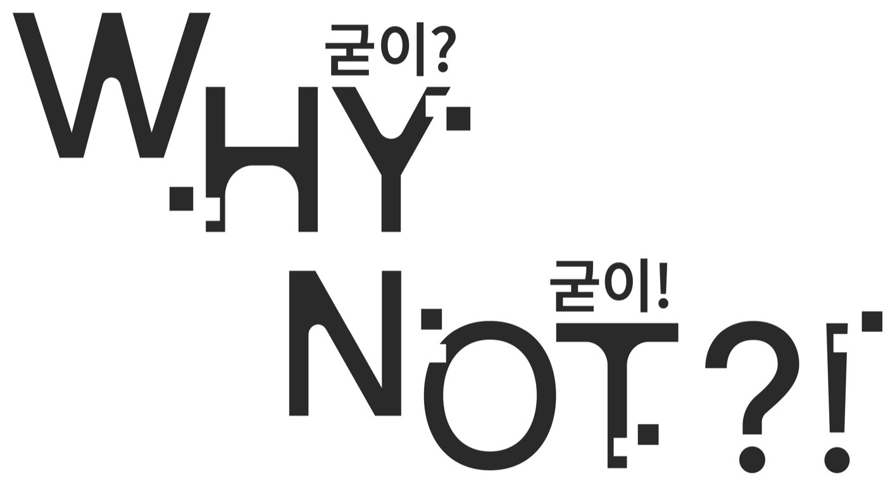
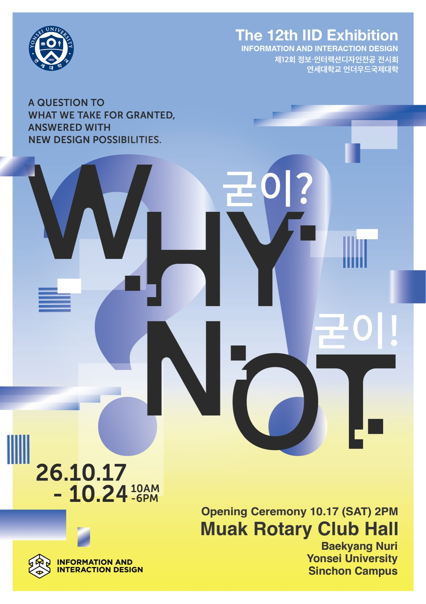
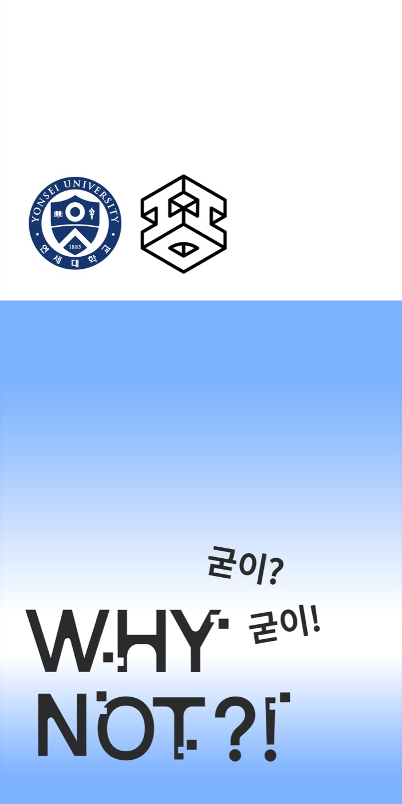
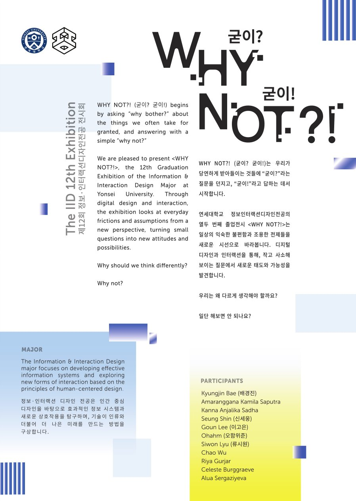
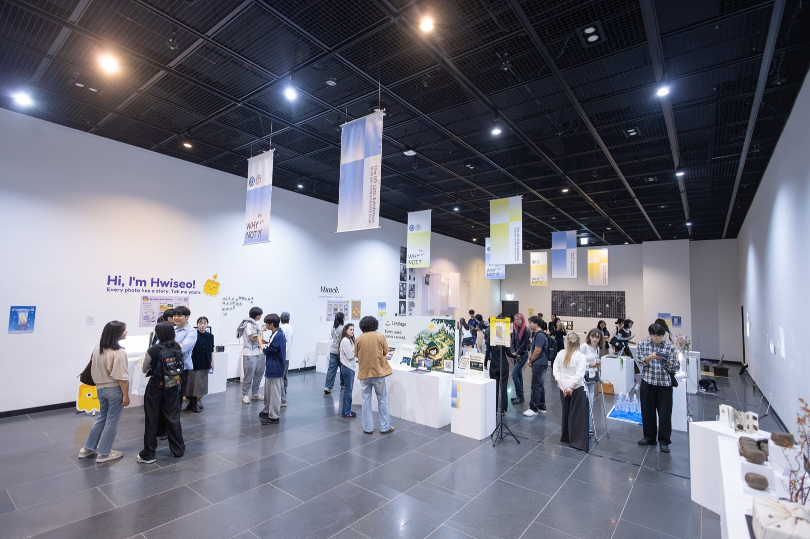
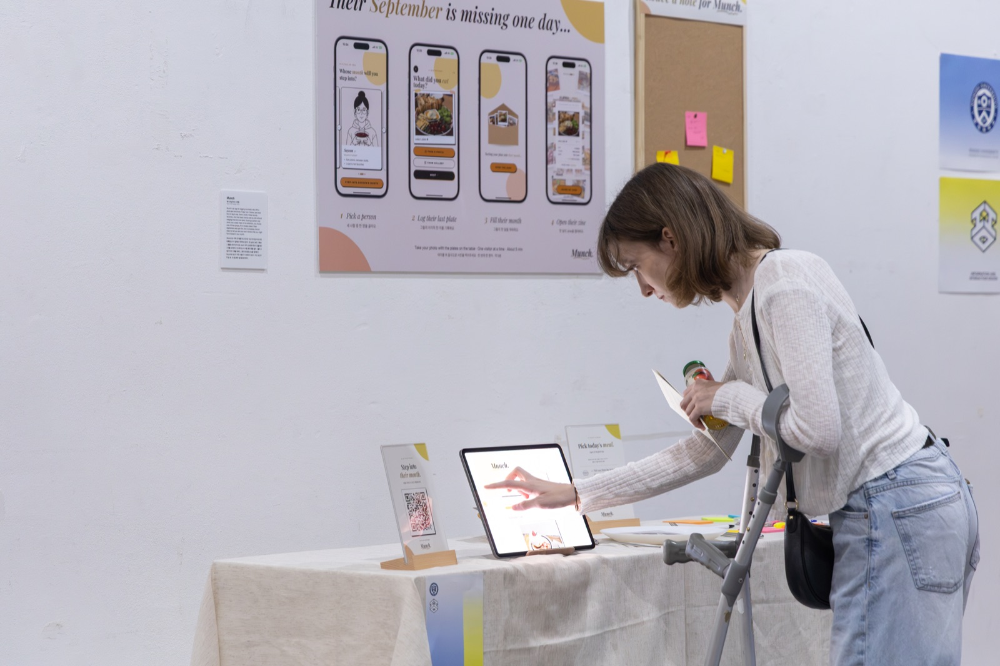

WHY NOT?!

Define
앱, 게임, 모션그래픽, 식기 디자인까지 성격이 다른 작품 12점을 하나로 묶을 이름과 태도가 필요함
졸업을 앞둔 학생들의 도전을 보여주면서도, 전시 전체가 무겁지 않을 방향이 필요함
Process
이름과 콘셉트
"Why not?"이라고 도전하는 사람들의 첫걸음이 세상을 바꾼다는 생각에서 출발
WHY NOT?!과 한국어 짝 "굳이? 굳이!"로 질문과 답을 한 이름에 담음

전시 설명문
WHY NOT?! (굳이? 굳이!)는 우리가 당연하게 받아들이는 것들에 "굳이?"라는 질문을 던지고, "굳이!"라고 답하는 데서 시작합니다.
연세대학교 정보인터랙션디자인전공의 열두 번째 졸업전시 ⟪WHY NOT?!⟫는 일상의 익숙한 불편함과 조용한 전제들을 새로운 시선으로 바라봅니다. 디지털 디자인과 인터랙션을 통해, 작고 사소해 보이는 질문에서 새로운 태도와 가능성을 발견합니다.
우리는 왜 다르게 생각해야 할까요?
일단 해보면 안 되나요?
컬러 콘셉트
연세대학교의 상징색인 블루를 기반으로, 학생들의 정제되지 않은 아이디어를 옐로로 표현
두 색의 그라데이션으로 무겁지 않은 전시 톤을 만들고, 포스터와 행잉 배너에 적용



리플렛과 스탬프 투어
앞면은 전시 소개와 참여 작가, 뒷면은 5개 구역 지도이자 스탬프 투어
관람객이 모든 구역을 빠짐없이 돌도록 구성


Result
2026.10.17–10.24 백양누리 무악로타리홀에서 성공적으로 전시 개최
200명 이상의 외부 관람객 유치
UIC 뉴스레터 게재
전시 현장




Role
Head TA로 전시 브랜딩부터 운영 계획까지 총괄
다국적 작가 11명의 작품 12점을 32일 만에 한 전시로 구성
이해관계자 갈등 조정, 지원금 예산 관리, 인쇄물 발주